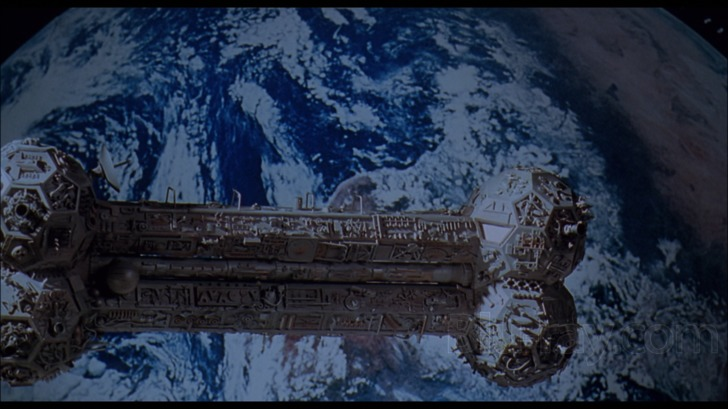

Here's how to use the
Watch-It-Together enhancing script
for
Club MST3k
!
Add your preferred link as a bookmark:
Allow me to put the chat window next to the movie (theater mode.)
Give me both theater mode
and
autoplay functionality.
Navigate to
an episode
and load the bookmark.
This site is not affiliated with Club MST3k, but I enjoy their work
very much
.